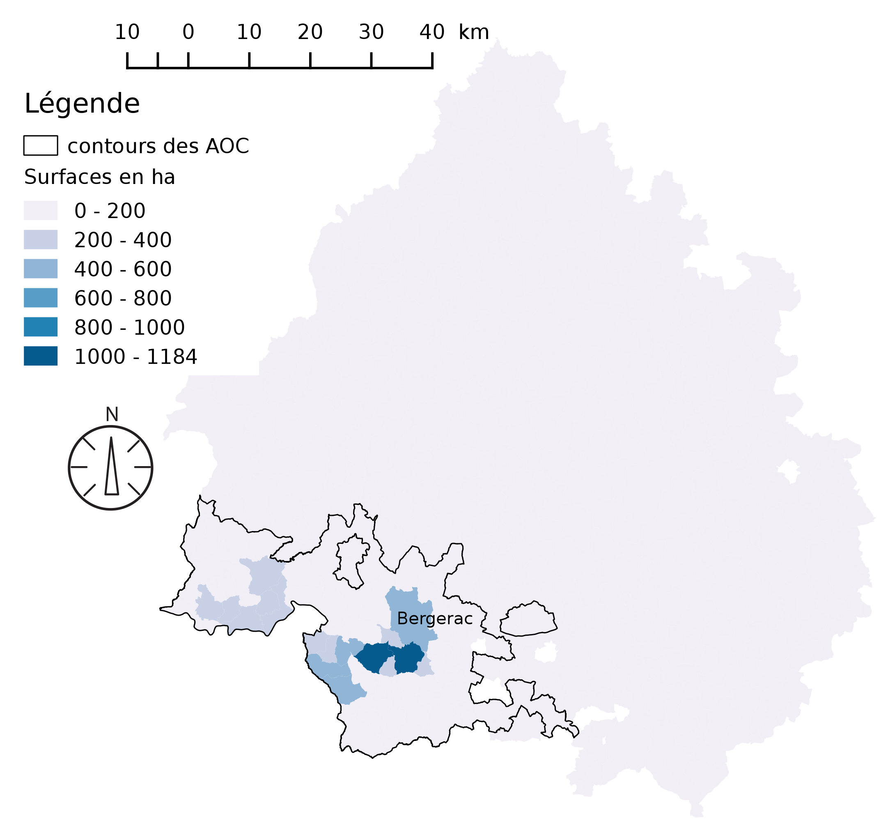
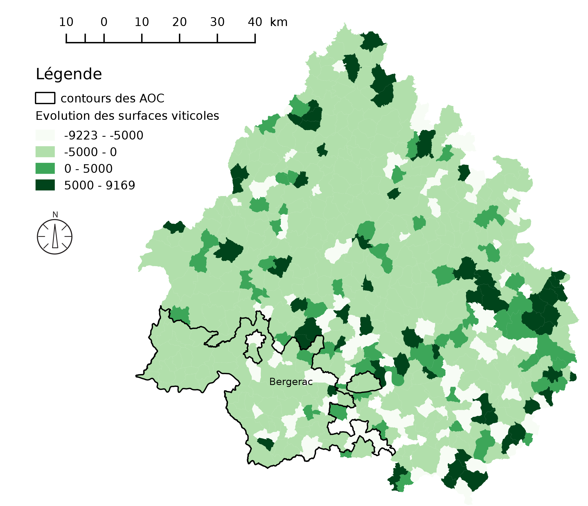
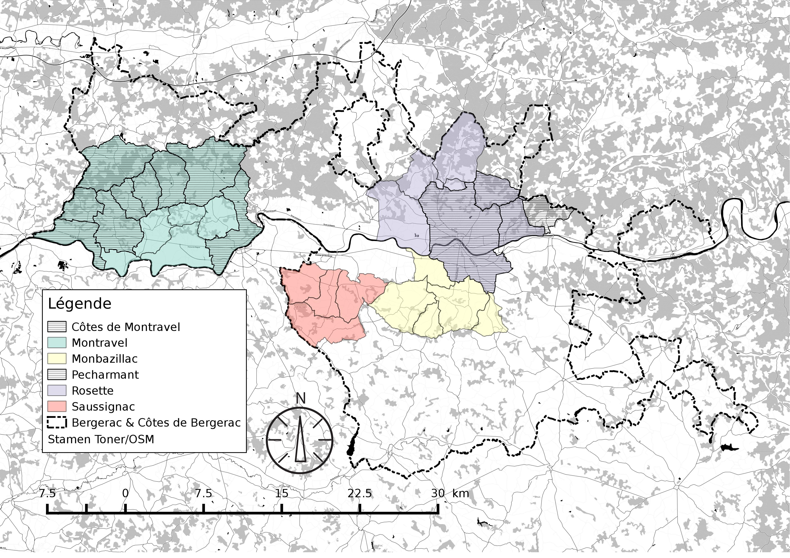
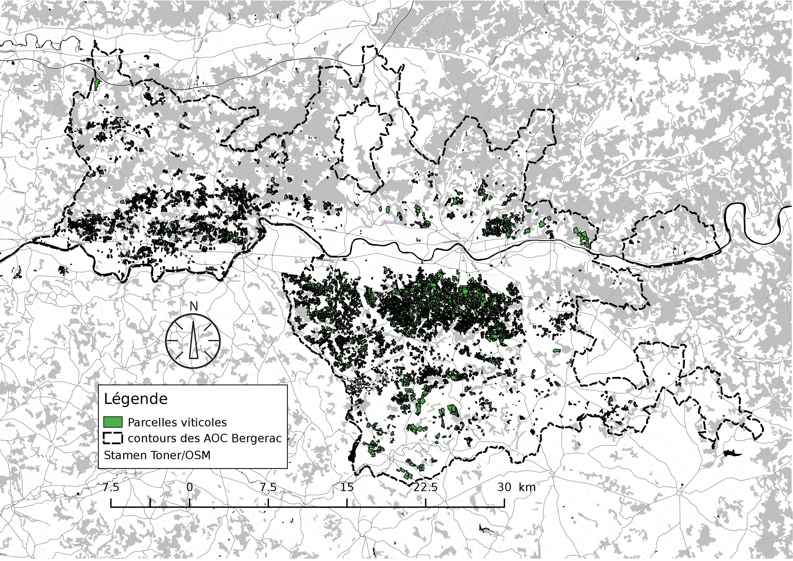
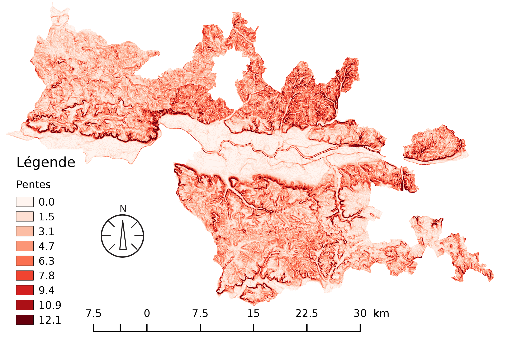
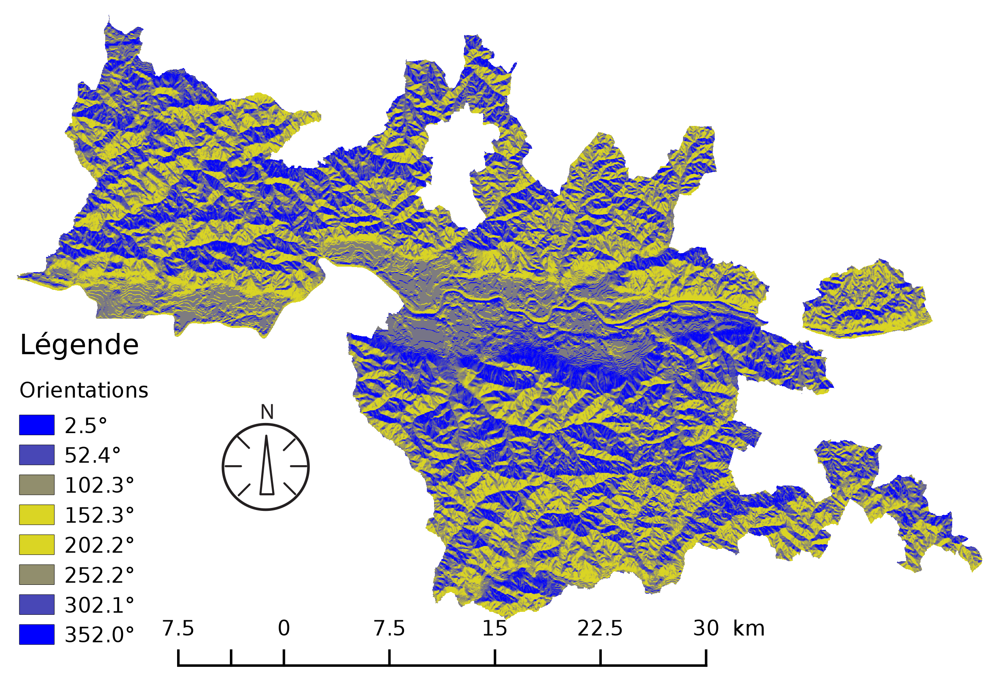
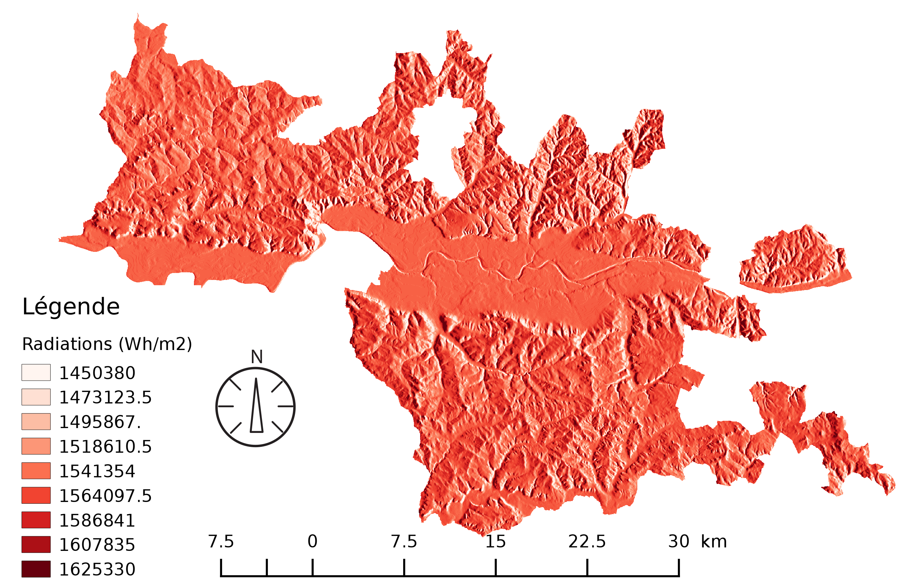
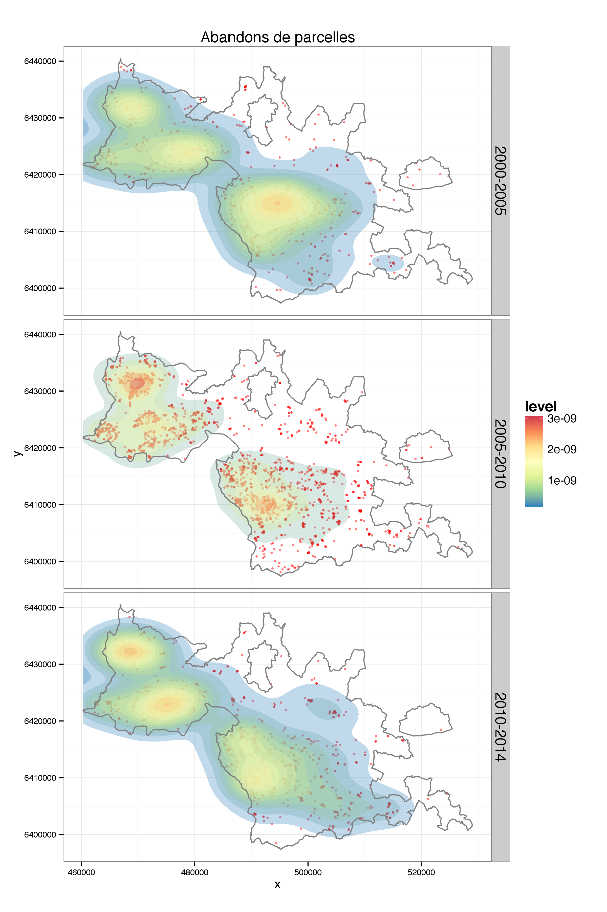
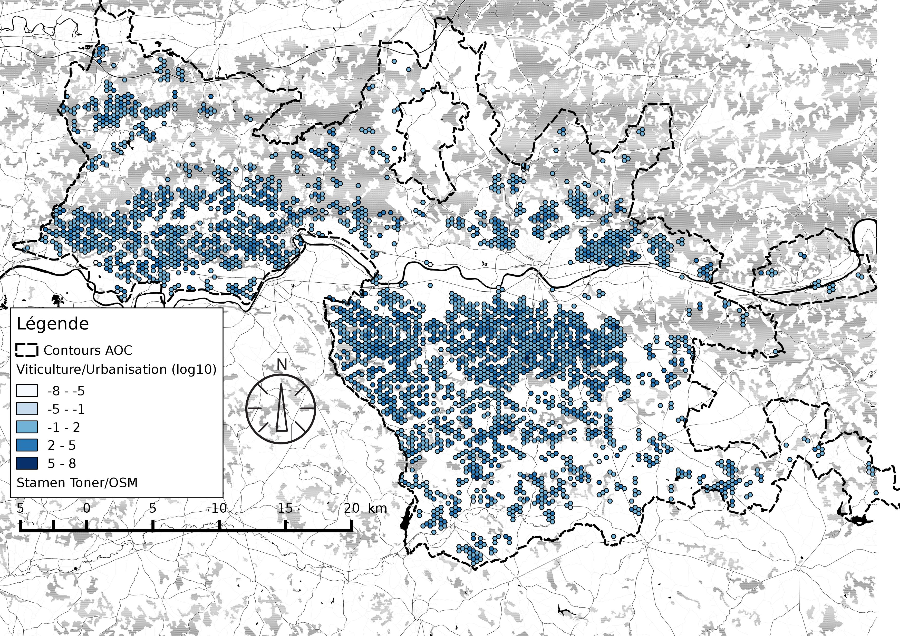

Présentation des travaux du Groupe C avec discussion :
Les spatialistes
Avec : Etienne DELAY, Jacques Gautier, Eric Rouvellac, Xavier Rodier
séminaire VitiTerroir - 26 mai 2015 Tours (CITERES-LAT)
L'atlas des dynamiques
contextes et données
Focus sur l'espace
- La Touraine : en temps qu'objet central de l'étude
- Le Bergerac : comme vignoble témoin
Explorer et comprendre les mécanismes et les objectifs qui sont mobilisés par les sociétés viticoles
Les données
- Le CVI pour 2005, 2010 et 2014
- Le cadastre unifié de l'IGN
- Le RGA 1955, 1979, 1988 et 2000
- Un DEM à une résolution de 25m (IGN)
Viticulture départementale
 Les AOC Bergerac
Les surfaces viticoles entre 1970 et 2014

L'emprise de la vigne en 2014
Méthodologie
Manipulation du DEM : Pentes et orientations
 Manipulation du DEM : radiations
A partir des altitudes, de la pente et des orientations on peut calculer la somme radiative sur la période végétative
Les facteurs abiotiques et le vignoble
Par ANOVA, on teste l'influence des facteurs abiotiques sur les dynamiques diachroniques du vignoble
- Pas de corrélation avec les radiations ni avec les expositions
- Une corrélation assez bonne sur les valeurs de pente et d'altitude
L'abandon : une dynamique spatiale ?
Ville et vignoble : une concurrence ?
Discussion
Premières interprétations
| Facteurs | Constat | Poids du facteur |
|---|---|---|
| Relief/pentes | Vignes installées en grande majorité sur de faibles pentes | Moyen |
| Nature du sol | Vignes installées principalement sur des sols pauvres au 19e siècle mais et sans logique apparente en 2014 | Faible |
| Démographie | 2 phases de forte corrélation entre la vigne et la population +19e -20e | Trad = Fort actu = Faible |
| Urbanisation | La décroissance du vignoble se fait parallèlement à un fort accroissement du bâti. Compétition urbain/viticole? | Faible |
| Labélisation | La seule labellisation n’a pas réussi à changer la tendance de décroissance | Faible |
Les prolongements
Nous sommes maintenant à la recherche d'autres données pour améliorer notre vison des dynamiques spatiales
- Géologie/pédologie
- Prix du litre de vin par AOC et par ans
- Prix du foncier
- Prix du bâtis
Merci de votre Attention


Retrouvez cette présentation sur GitHub : http://unil.im/uJPV2
Et toutes les informations sur vititerroi.hypotheses.org
réalisée avec reveal.js crédit photo : Thomas Misnyovszki on Flick'r